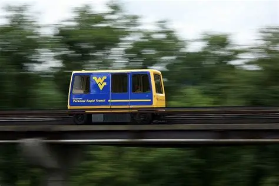

Evansdale 2050 - Infrastructure and Security
Evansdale 2050 is home to the Critical Infrastructure Security Lab (CIL). Located in the Engineering Sciences Building at WVU, the CIL is headed by Dr. Mohamed Hefeida. The lab contains a simulation setup mimicing WVU's Personal Rapid Transit System (PRT), accented with scale model recreations of many WVU buildings. The Lab contains a variety of equipment to help students learn about infrastructure cyber security as well as logical security and control.

What is the Critical Infrastructure Lab?

The Critical Infrastructure Lab (CIL) is built for students, by students.
The lab acts as a testing ground for students to work in three primary domains.
• PRT/Traffic
• Smart Manufacturing
• Renewable Power Management
The CIL was built largely on the backs of undergraduate capstone projects and funded through grants and Industrial donations.
The Lab provides students with systems analogous to real-life deployments as a way of providing experience useful for work force applications.
Work focuses on parameter sensitivity, automation limits, AI control systems, and secure design principles without risking cascading problems that come with real-world deployment tests.
Ongoing Projects
PRT Scheduling
Many students at WVU have at least one story involving the PRT. From arriving late to class to getting stuck on the tracks in the middle of the day, the PRT has a lot of perceived problems. The CIL seeks to improve the performance of the PRT using schedules taht adjust based on student schedule patterns. The lab has been collecting data on PRT use patterns and Student schedule metrics in hopes of improving the efficiency at which vehicles arrive, travel, and depart from stations to maximize per/ride efficiency. Decreaesd car availability during periods of low travel while increasing availability whenever classes let out are just some of the goals that this project seeks to work on.

Renewable Energy Management

The Lab has a small portable cart they use to deploy a renewable energy station possesing a power bank and an assortment of wind turbines and solar arrays. This station uses the genereated power to train its power bank which makes decisions on whether the power is necessary based on available back-up power in both on and off-grid situations. The Goal of this project is to demonstrate a nominal amount (~10%) increase in efficiency from a combination of clean generation sources and smart-management systems.